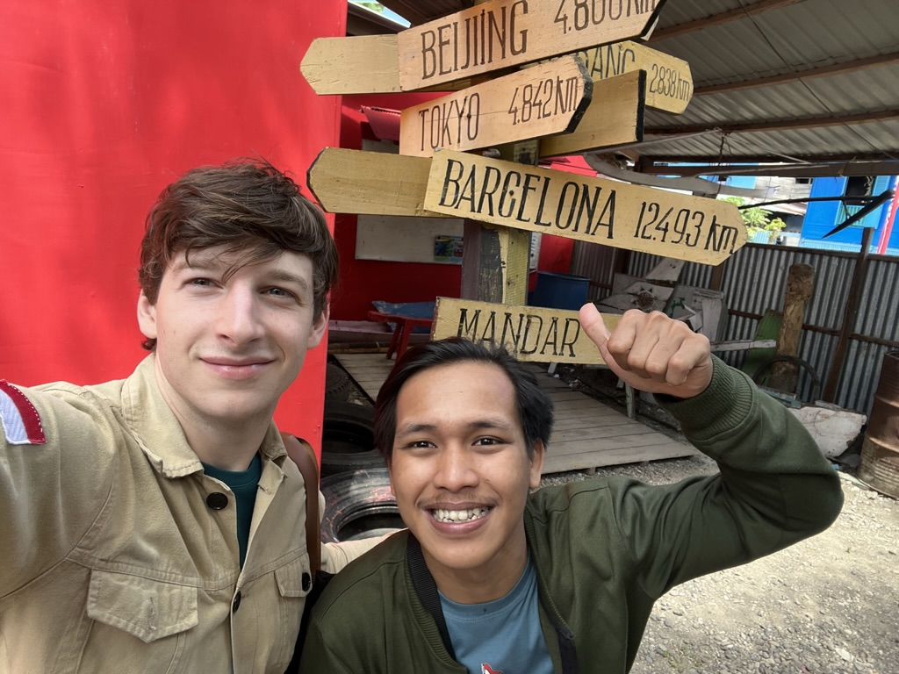

Jupri Talib

My primary consultant, Jupri Talib, has begun to pursue a Ph.D in linguistics at Hasanuddin University. In 2023, he received an offer to become a professor in linguistics at the University of West Sulawesi pending the completion of his degree. In translation, here is a biography he wrote in 2022:"My name is Jupri Talib. I've just finished an undergraduate degree in English Literature at Kanjuruhan Teacher's College, Malang, with a thesis on metrical structure in Mandar Kalinda'da' poetry. Since meeting Dan, I've found a real interest in linguistics, and I want to do my own work to help preserve the languages and literatures of Indonesia.
"I've been helping with research on the structure of Mandar with Dan since 2018. This work is remarkable to me, since it helps bring the name of my language to a global scale, and it's given me the opportunity to learn a lot about linguistics- from the basics of clause structure in Mandar to the role of prosodic phonology in understanding our traditional poetry. All of this makes for a really nice way, I think, to show people that our language is unique, full of special properties that were slowly refined over generations, and really worth our care and attention today. I hope this work will help people learn about Mandar and provide a model to study languages across the rest of Indonesia, too."